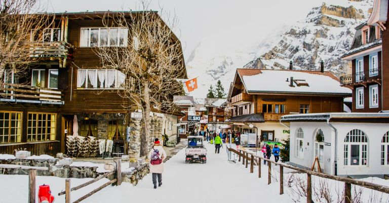
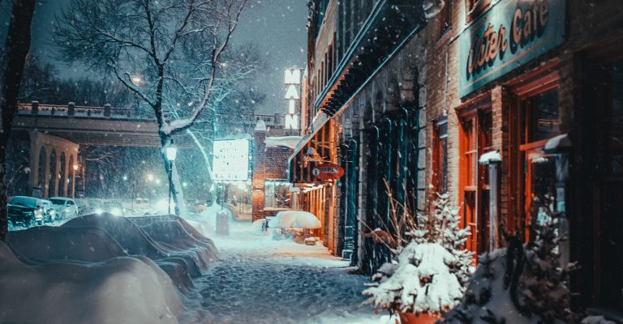
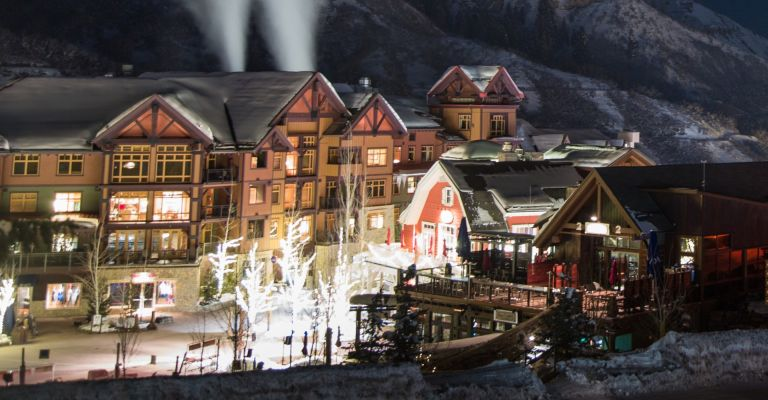
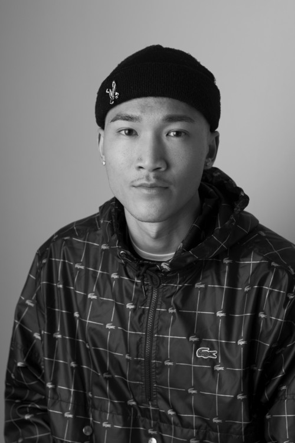
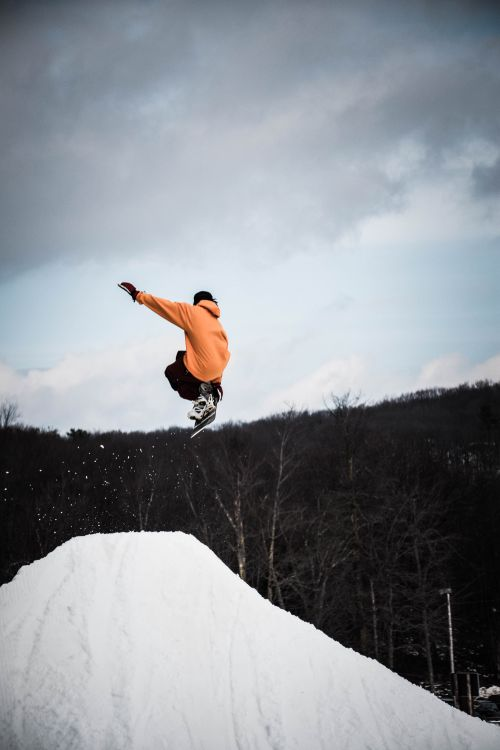
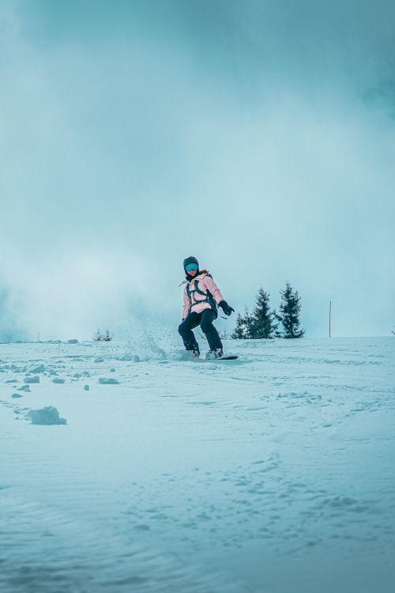
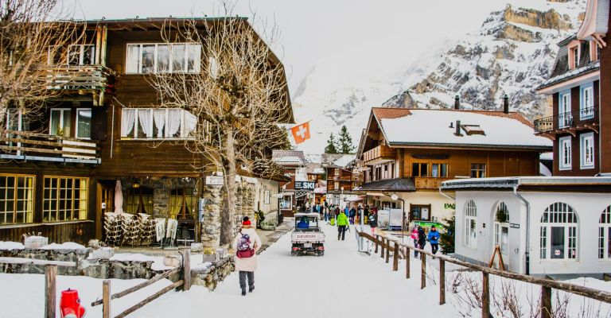
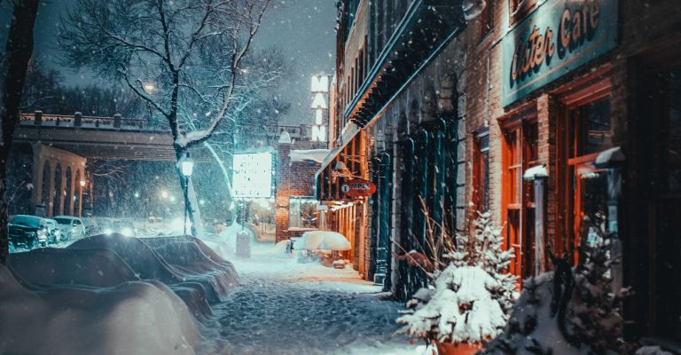
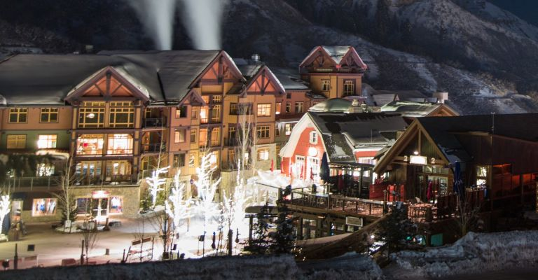

Shop




新店舗は現在オープンしており、いつでも皆さまをお迎えします。スノーボードコレクションをチェックしたり、店内のカフェでコーヒーを飲みながらリラックスしてお楽しみください。
Staff
フレンドリーなスタッフが、豊富な専門知識と、美味しいコーヒーで皆さまをおもてなしします。









新店舗は現在オープンしており、いつでも皆さまをお迎えします。スノーボードコレクションをチェックしたり、店内のカフェでコーヒーを飲みながらリラックスしてお楽しみください。
フレンドリーなスタッフが、豊富な専門知識と、美味しいコーヒーで皆さまをおもてなしします。